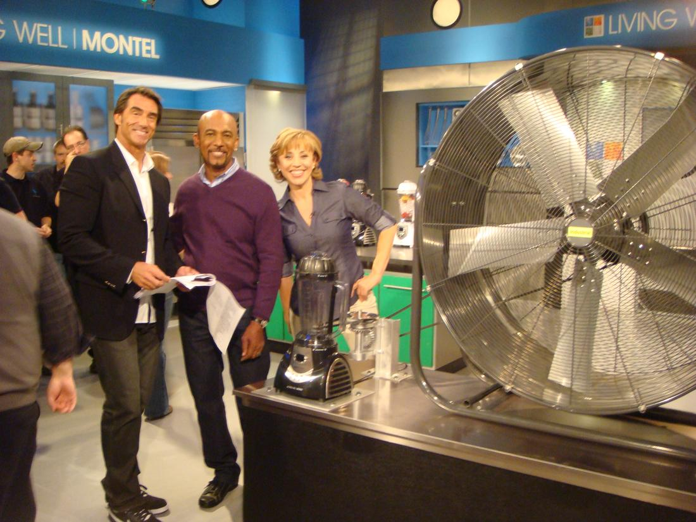
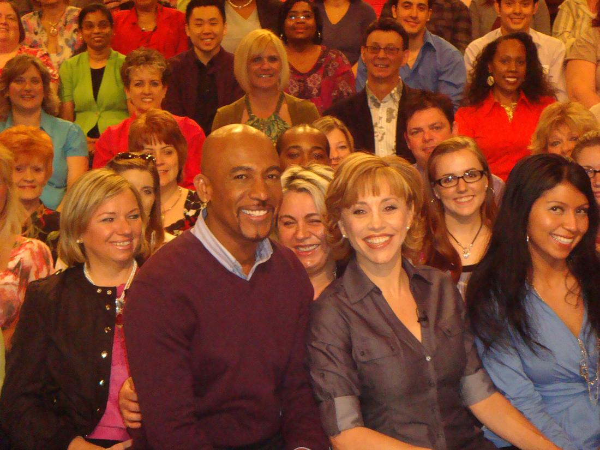
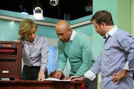
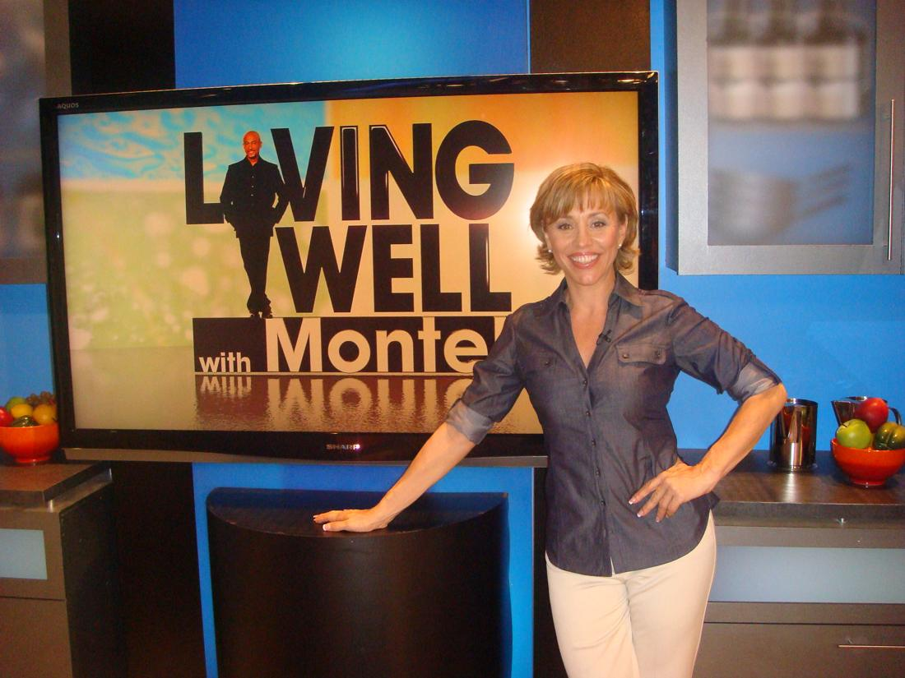

Infomercial Co-Host Montel Williams




I had the pleasure of hosting 2 very successful infomercial alongside talk show host Montel Williams
▶ Watch the video on YouTube

Montel Williams Biography
Author and actor Montel Williams rose to fame in 1991 with the launch of his talk show, The Montel Williams Show, which ran for 17 seasons and earned its host an Emmy. Talk-show host Montel Brian Anthony Williams was born in Baltimore, Maryland, in 1956. The son of a fire chief, Williams went on to have a successful military career before leaving the armed services for full-time work as a motivational speaker. In 1991, The Montel Williams Show debuted. The program ran for 17 seasons and made Williams a household name.Early Years
Montel Brian Anthony Williams was born on July 3, 1956, in Baltimore, Maryland. The youngest of four children, Williams grew up in the southwest Baltimore neighborhood of Cherry Hill, before moving to the suburban community of Glen Burnie at the age of 6 with his family.A good student, Williams was bused to Andover High School, a largely white school in Linthicum, Maryland. Over the course of his long career Williams has broken through a number of racial barriers, one of which included becoming his school’s class president during his senior year, in 1974. Undoubtedly, Williams’ drive was shaped by his father, Herman Williams, Baltimore’s first black fire chief.Following high school, Williams joined the Marines, paving the way for him to become the first black Marine to attend the Naval Academy Prep School in Newport, Rhode Island, where he was one of only four to graduate. Williams graduated from the school in 1976.From there, Williams enrolled at the U.S. Naval Academy, which he graduated from in 1980 with a Bachelor of Science in engineering. In addition, Williams, who has a good ear for language, also learned to speak Russian and Chinese.But the energetic and ambitious Williams saw a life for himself outside the military. In 1989 he resigned his active-duty commission and started work as a full-time motivational speaker, work he’d started while still in the Navy. He also developed a nonprofit group called Reach for the American Dream, which delivered college scholarships to students unable to afford higher education.His rise to television stardom was rooted in his speaking work. Williams’ heartfelt and upbeat style caught the attention of PepsiCo, which funded a number of his speeches. In addition, the company selected him to do a short introduction for the film Glory and paid to have videos of the film distributed to schools around the country.Commercial Success
Williams’ talent, energy and good looks soon caught the attention of television executives, as well as Glory producer Freddie Fields. By 1991 plans had been put in place to tap into Williams’ potential star power through a television talk show. That year, The Montel Williams Show debuted. The program gave Williams the distinction of becoming the first black man to have his own show in daytime.
Despite his relative inexperience in his new profession, Williams did not lack confidence. “If I look back at my life, everything I’ve done has brought me here,” he said in an interview with the Los Angeles Times. “I’m a talk show host, I’m going to be a talk show host…I’m telling you, this is the talk show of the ’90s.”
Williams quickly backed up his claims. Charming and positive, Williams packed a style that quickly drew rave reviews from viewers and television critics. Compassion was also a part of the program’s equation, as Williams became the only talk-show host to employ a full-time psychologist for his guests. He also launched the After Care Program, which allowed his struggling guests to pursue treatment for depression, weight gain and addictions.
In 1996 Williams won the Emmy for “Outstanding Talk Show Host.” Overall, the program ran for 17 seasons, ceasing production in 2008.
On top of the success of his program, Williams has ventured into other areas of the entertainment business. He’s appeared on several different television shows, from JAG to All My Children to Touched by an Angel. Additionally, he directed the full-length film Little Pieces. But his career and life have also been shaped by his health. In 1999 doctors diagnosed Williams with multiple sclerosis (MS). As expected, the always positive Williams refused to sound defeated. “I want to inspire people, and show them that they can live and prosper with MS,” Williams said at the time.
He’s since gone on to raise major awareness about the disease, work that has included the launch of The Montel Williams MS Foundation.

Free · live on Zoom every Sunday
The Secret Pitch Formula
Join Forbes live for the Pitch Secrets Masterclass. Over 80,000 people have learned the 7-second hook, the three pitch patterns behind $2.5 billion in sales, and how to close without sounding salesy. Free, with a gift worth $500 for registering.
Sundays, 2 p.m. PT / 5 p.m. ET. Registration and the Zoom link are at pitchsecretstraining.com.